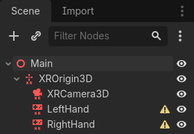
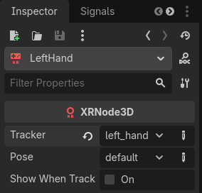

Thiết lập XR
Giới thiệu hệ thống XR trong Godot
Godot cung cấp một hệ thống XR mô-đun, giúp ẩn đi nhiều chi tiết riêng của từng nền tảng XR khác nhau. Trung tâm của hệ thống là XRServer, đóng vai trò giao diện trung tâm của hệ thống XR, cho phép người dùng khám phá các interface và tương tác với các thành phần của hệ thống XR.
Mỗi nền tảng XR được hỗ trợ được triển khai dưới dạng một XRInterface. Bạn có thể tìm danh sách các nền tảng được hỗ trợ trên trang danh sách tính năng tại đây. Các interface được hỗ trợ tự đăng ký với XRServer và có thể được truy vấn bằng phương thức find_interface trên XRServer. Khi tìm thấy interface mong muốn, bạn có thể khởi tạo nó bằng cách gọi initialize trên interface đó.
Cảnh báo
Một interface đã đăng ký chỉ có nghĩa là interface đó có sẵn; nếu hệ thống chủ không hỗ trợ interface, việc khởi tạo có thể thất bại và trả về false. Có nhiều lý do cho việc này và đáng tiếc là lý do khác nhau tùy nền tảng. Có thể là do người dùng chưa cài phần mềm cần thiết, hoặc đơn giản là chưa cắm headset. Vì vậy, là nhà phát triển, bạn phải xử lý đúng khi một interface khởi tạo thất bại.
Do các yêu cầu đặc biệt về đầu ra trong XR, đặc biệt với các thiết bị đeo đầu cung cấp hình ảnh khác nhau cho mỗi mắt, XRServer trong Godot sẽ ghi đè nhiều tính năng trong hệ thống kết xuất. Với các thiết bị độc lập (stand-alone), điều này có nghĩa là đầu ra cuối cùng được XRInterface xử lý và hệ thống xuất hình thông thường của Godot bị tắt. Với các thiết bị XR trên desktop hoạt động như màn hình thứ hai, bạn có thể dành riêng một Viewport để xử lý đầu ra XR, giữ cửa sổ Godot chính để hiển thị nội dung khác.
Ghi chú
Lưu ý rằng chỉ một interface có thể chịu trách nhiệm xử lý đầu ra tới thiết bị XR, interface này được gọi là primary interface và mặc định sẽ là interface đầu tiên được khởi tạo. Vì vậy, Godot hiện chỉ hỗ trợ các triển khai với một headset duy nhất. Bạn có thể có một interface phụ, dù ngày càng hiếm gặp, chẳng hạn để bổ sung khả năng theo dõi cho một thiết bị vốn chỉ hỗ trợ 3DOF.
Có ba kiểu node dành riêng cho XR mà bạn sẽ thấy trong gần như mọi ứng dụng XR:
XROrigin3D về cơ bản đại diện cho điểm trung tâm của không gian chơi. Đây là cách nói đơn giản hóa quá mức nhưng chúng ta sẽ đi vào chi tiết sau. Mọi đối tượng được nền tảng XR theo dõi trong không gian vật lý đều được định vị tương đối với điểm này.
XRCamera3D đại diện cho camera (stereo) được dùng khi kết xuất đầu ra cho thiết bị XR. Vị trí của node này do hệ thống XR điều khiển và được cập nhật tự động bằng thông tin theo dõi mà nền tảng XR cung cấp.
XRController3D đại diện cho controller mà người chơi sử dụng, thường có hai cái, mỗi tay cầm một cái. Các node này cho phép truy cập nhiều trạng thái trên controller và phát signal khi người chơi nhấn nút trên đó. Vị trí của node này do hệ thống XR điều khiển và được cập nhật tự động bằng thông tin theo dõi mà nền tảng XR cung cấp.
Còn có các node khác liên quan đến XR và còn nhiều điều để nói về ba node này, nhưng chúng ta sẽ đề cập sau.
Nên dùng renderer nào
Godot có 3 tùy chọn renderer cho dự án: Compatibility, Mobile và Forward+. Khuyến nghị hiện tại là dùng renderer Mobile cho mọi dự án VR trên desktop, hoặc mọi dự án chạy trên headset độc lập như Meta Quest 3. Dự án XR vẫn chạy được với renderer Forward+, nhưng hiện tại nó chưa được tối ưu tốt cho XR so với hai renderer còn lại.
OpenXR
OpenXR là API tiêu chuẩn công nghiệp cho phép các nền tảng XR khác nhau tương tác với ứng dụng XR. Đây là một tiêu chuẩn mở do Khronos Group duy trì, vì vậy rất phù hợp với định hướng của Godot. Do đó, chúng tôi dùng nó làm ví dụ trong phần giới thiệu này. Hãy xem các chương tương ứng để biết sự khác biệt với các API khác.
Phần triển khai Vulkan của OpenXR được tích hợp chặt chẽ với Vulkan, đảm nhận một phần hệ thống Vulkan. Điều này đòi hỏi tích hợp chặt chẽ một số tính năng đồ họa cốt lõi trong renderer Vulkan, vốn cần có trước khi hệ thống XR được thiết lập. Đây là một trong những yếu tố chính quyết định việc đưa OpenXR vào làm interface lõi.
Điều này cũng có nghĩa là OpenXR cần được bật khi Godot khởi động để thiết lập mọi thứ đúng cách. Hãy chọn cài đặt Enabled trong cài đặt dự án, mục XR > OpenXR.

Bạn cũng sẽ tìm thấy một số cài đặt khác liên quan đến OpenXR tại đây. Các cài đặt này không thể thay đổi khi ứng dụng đang chạy. Cài đặt mặc định đủ để chúng ta bắt đầu, nhưng để biết thêm về các tùy chọn ở đây, hãy xem Cài đặt OpenXR.
Bạn cũng cần vào XR > Shaders trong cài đặt dự án và chọn ô Enabled để bật chúng. Sau khi làm xong, nhấn nút Save & Restart.

Cảnh báo
Nhiều hiệu ứng hậu kỳ (post process) chưa được cập nhật để hỗ trợ kết xuất lập thể (stereoscopic). Sử dụng chúng sẽ gây ra hiệu ứng không mong muốn.
Thiết lập scene XR
Mọi ứng dụng XR cần ít nhất một node XROrigin3D và một node XRCamera3D. Hầu hết sẽ có hai XRController3D, một cho tay trái và một cho tay phải. Lưu ý rằng node camera và controller phải là con của node origin. Thêm các node này vào một scene mới và đổi tên các node controller thành LeftHand và RightHand, scene của bạn sẽ trông giống như sau:

Các biểu tượng cảnh báo là điều bình thường và sẽ biến mất sau khi bạn cấu hình controller. Chọn tay trái và thiết lập như sau:

Và tay phải:

Hiện tại tất cả các node này đều nằm trên sàn, chúng sẽ được định vị đúng khi chạy. Để hỗ trợ trong quá trình phát triển, bạn có thể di chuyển camera lên trên để y bằng 1.7, và di chuyển các node controller tới -0.5, 1.0, -0.5 và 0.5, 1.0, -0.5 lần lượt cho tay trái và tay phải.
Tiếp theo, chúng ta cần thêm một script vào node gốc. Thêm code sau vào script này:
extends Node3D
var xr_interface: XRInterface
func _ready():
xr_interface = XRServer.find_interface("OpenXR")
if xr_interface and xr_interface.is_initialized():
print("OpenXR initialized successfully")
# Change our main viewport to output to the HMD.
get_viewport().use_xr = true
else:
print("OpenXR not initialized, please check if your headset is connected")
using Godot;
public partial class MyNode3D : Node3D
{
private XRInterface _xrInterface;
public override void _Ready()
{
_xrInterface = XRServer.FindInterface("OpenXR");
if(_xrInterface != null && _xrInterface.IsInitialized())
{
GD.Print("OpenXR initialized successfully");
// Change our main viewport to output to the HMD.
GetViewport().UseXR = true;
}
else
{
GD.Print("OpenXR not initialized, please check if your headset is connected");
}
}
}
Ghi chú
Không có giới hạn về nơi code này được thực thi. Thông thường, script này được thêm vào node XROrigin3D hoặc vào một node con Node3D của node gốc.
Interface OpenXR có điểm đặc biệt là chúng ta phải khởi động nó trước khi dự án được tải, vì vậy ở đây kiểm tra is_initialized. Hầu hết các interface khác thì cần gọi hàm initialize của chúng.
Nếu bạn muốn hỗ trợ nhiều interface XR, chẳng hạn phát hành một game vừa nhắm tới phần cứng OpenXR vừa triển khai qua WebXR, bạn có thể kiểm tra lần lượt từng cái cho đến khi tìm thấy interface hoạt động.
Cảnh báo
Vì OpenXR xuất kết quả kết xuất tới HMD, vốn thường chạy ở tốc độ khung hình cao hơn màn hình, các cài đặt V-Sync của Godot sẽ bị bỏ qua và V-sync luôn bị tắt.
Thay vào đó, OpenXR tự thực hiện việc định thời frame để đảm bảo tốc độ khung hình ổn định.
Cũng lưu ý rằng mặc định engine vật lý cũng chạy ở 60Hz và điều này có thể khiến vật lý bị giật. Bạn nên đặt Engine.physics_ticks_per_second thành giá trị cao hơn.
Nếu bạn chạy dự án lúc này, mọi thứ sẽ hoạt động nhưng bạn sẽ ở trong một thế giới tối tăm. Vì vậy, để hoàn thiện điểm khởi đầu, hãy thêm một node DirectionalLight3D và một node WorldEnvironment vào scene. Bạn cũng có thể thêm một mesh instance làm con của mỗi node controller để tạm thời hiển thị chúng. Hãy đảm bảo bạn cấu hình sky trong world environment.
Giờ hãy chạy dự án, bạn sẽ thấy mình lơ lửng đâu đó trong không gian và có thể nhìn xung quanh.
Ghi chú
Mặc dù cách chuyển level truyền thống chắc chắn dùng được với ứng dụng XR, khi đó thiết lập scene này được lặp lại ở mỗi level, phần lớn mọi người thấy dễ hơn khi thiết lập một lần và tải các level dưới dạng subscene. Nếu bạn chuyển scene và lặp lại thiết lập XR trong mỗi scene, hãy đảm bảo không gọi initialize nhiều lần. Hậu quả có thể khó lường tùy theo interface XR được dùng.
Trong phần còn lại của loạt bài hướng dẫn cơ bản này, chúng ta sẽ tạo một game chỉ dùng một scene duy nhất.